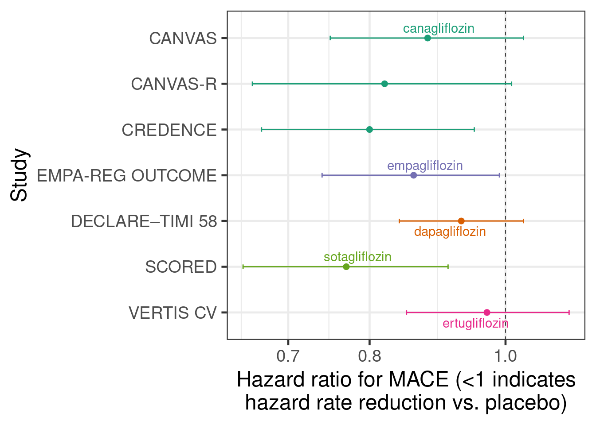
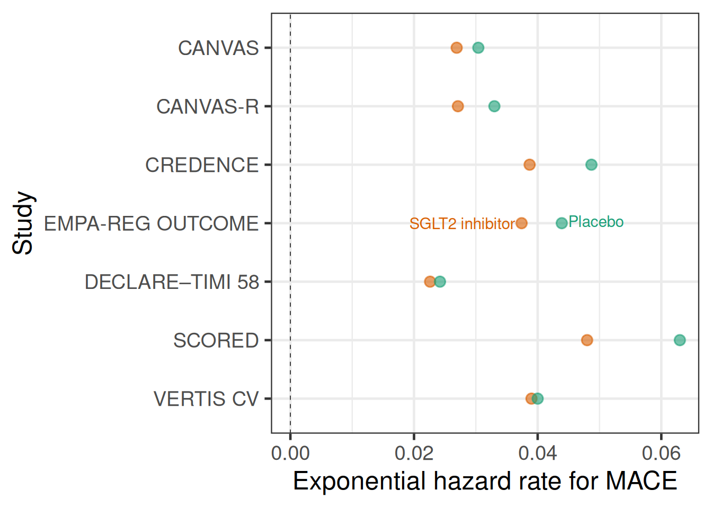
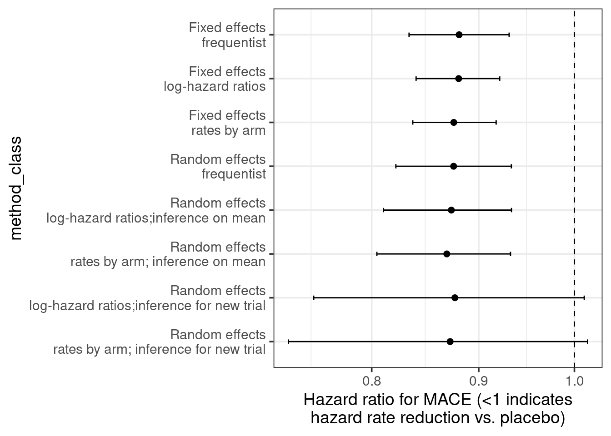

library(tidyverse)
library(ggrepel)
library(brms)
library(posterior)
library(meta)
here::i_am("src/02ab_meta_analysis_trtdiff.qmd")
# instruct brms to use cmdstanr as backend and cache all Stan binaries
options(brms.backend="cmdstanr", cmdstanr_write_stan_file_dir=here::here("_brms-cache"))
# create cache directory if not yet available
dir.create(here::here("_brms-cache"), FALSE)
set.seed(979356)5 Meta-analysis to estimate treatment effects
To run the R code of this section please ensure to load these libraries first:
5.1 Background
Meta-analyses have become a key tool of evidence based medicine (Higgins and Green, 2011, Section 1.2.2) for when we have multiple studies that address the same (or closely related) question(s). Each study may not be able to conclusively answer these questions on its own or the results may vary across the studies. In this scenario, a meta-analysis can quantitatively combine the results of these multiple studies to provide an overall result. Literally, a meta-analysis is a statistical analysis of the analysis results from individual studies (for the purpose of combining the results) (Glass, 1976).
One of most common types of meta-analysis in evidence based medicine is that of treatment effects estimated from randomized controlled trials. Meta-analyses of treatment effects from randomized controlled trials importantly respect within study randomization (“analyze as you randomize”). In contrast, simply pooling data from all trial arms ignoring from what study they come, is usually inappropriate and can lead to wildly inappropriate conclusions.
In this section we focus on meta-analyses for assessing treatment effects, but meta-analytic methods can be used for combining data across studies for many other purposes. For example, in the next section we willcover predicting control group outcomes for new trials from historical control groups of historical trials. Meta-analyses can be conducted using treatment differences, using outcomes from each trial arm or using individual patient data. We will illustrate all of these approaches.
In this section we focus on how to conduct meta-analysis in brms, but ignore a wide range of other important topics. These include the selection of trials for inclusion in meta-analyses, how to handle unavailabile study results, the potential for there to be studies that we are not aware of, and indirect treatment comparisons using network meta-analysis. These topics are covered in-depth in the Cochrane handbook for systematic reviews of interventions, as well as in the book by Borenstein et al. (2009).
5.2 Data
Let us look at a meta-analysis for the effect of sodium-glucose transport protein 2 (SGLT-2) inhibitors on major adverse cardiovascular events (MACE). MACE is a composite endpoint defined by the occurrence of either cardiovascular death, myocardial infarction or stroke. It is usually analyzed using time-to-first-event methods. We will use the data from all 7 SGLT-2 inhibitor trials in the meta-analysis of Barbarawi et al., for which MACE results have been published. This example lets us try out different approaches and input data formats.
The first way of inputting data that we will look at is using estimated treatment differences from each study and their standard erorrs. Here, the treatment effect estimate from each study is a hazard ratio from a Cox regression model. The figure below shows the estimate hazard ratios with their 95% confidence intervals from each of the 7 studies with a log-scaled x-axis. For hazard ratios (and similarly for odds and rate ratios) it is preferable to work on the log-scale, because using a normal approximation to the sampling distribution of the estimator works a lot better for smaller sample sizes. Thus, we work with log-hazard ratios and their standard errors.
sglt2_hr <- tibble(trial = c("DECLARE–TIMI 58", "EMPA-REG OUTCOME",
"CANVAS", "CANVAS-R", "CREDENCE",
"SCORED", "VERTIS CV"),
drug = c("dapagliflozin", "empagliflozin",
"canagliflozin", "canagliflozin", "canagliflozin",
"sotagliflozin", "ertugliflozin"),
studyno = c(5, 4, 1, 2, 3, 6, 7),
hr = c(0.93, 0.86, 0.88, 0.82, 0.80, 0.77, 0.97),
hr_lcl = c(0.84, 0.74, 0.75, 0.66, 0.67, 0.65, 0.85),
hr_ucl = c(1.03, 0.99, 1.03, 1.01, 0.95, 0.91, 1.11)) %>%
arrange(desc(studyno)) %>%
mutate(studyno = factor(studyno, levels=studyno, labels=trial),
log_hr = log(hr),
log_hr_stderr = (log(hr_ucl)-log(hr_lcl))/2/qnorm(0.975))
sglt2_hr %>%
ggplot(aes(x=hr, y=studyno, xmin=hr_lcl, xmax=hr_ucl,
col=drug, label=drug)) +
geom_vline(xintercept=1, linewidth=0.25, linetype=2) +
geom_point(shape=19) +
geom_errorbar(orientation = "y", width=0.1) +
scale_x_log10() +
geom_text_repel(data=.%>% filter(studyno %in% c("CANVAS", "DECLARE–TIMI 58",
"EMPA-REG OUTCOME", "SCORED",
"VERTIS CV"))) +
xlab("Hazard ratio for MACE (<1 indicates\nhazard rate reduction vs. placebo)") +
ylab("Study")
The second type of input to meta-analyses that we will use is outcomes for each treatment group. While meta-analyses more commonly use treatment differences as an input, we do not have to use that approach. Instead, we can use outcomes from each treatment group in each study as an input. Often, the two approaches are essentially equivalent, but especially when there is more than two treatment groups per study an approach using treatment differences does need modification in order to correctly capture the correlation of multiple treatment differences compared with the same control group. In contrast, an arm-based approach will automatically reflect this correlation.
In the SGLT-2 inhibitor case study, we will assume that event times approximately follow an exponential distribution, which allows us to conduct an arm-based meta-analysis with the number of cases per arm and the total follow-up time to firstevent or censoring per arm as inputs. These are the sufficient statistics for exponentially distributed event times with right-censoring.
sglt2 <- "record, study, trialid, studyno, drugname, treatment, cases, patients, py_to_evt_or_cens, cases_per_py
1,CANVAS,NCT01032629, 1,canagliflozin, 1, 425, 2888, 15799.25651, 0.0269
2,CANVAS,NCT01032629, 1,canagliflozin, 0, 233, 1442, 7664.473684, 0.0304
3,CANVAS-R,NCT01989754, 2,canagliflozin, 1, 160, 2907, 5904.059041, 0.0271
4,CANVAS-R,NCT01989754, 2,canagliflozin, 0, 193, 2905, 5848.484848, 0.0330
5,CREDENCE,NCT02065791, 3,canagliflozin, 1, 217, 2202, 5607.235142, 0.0387
6,CREDENCE,NCT02065791, 3,canagliflozin, 0, 269, 2199, 5523.613963, 0.0487
7,EMPA-REG OUTCOME,NCT01131676, 4,empagliflozin, 1, 490, 4687, 13102, 0.0374
8,EMPA-REG OUTCOME,NCT01131676, 4,empagliflozin, 0, 282, 2333, 6424, 0.0439
9,DECLARE–TIMI 58,NCT01730534, 5,dapagliflozin, 1, 756, 8582, 33451.32743, 0.0226
10,DECLARE–TIMI 58,NCT01730534, 5,dapagliflozin, 0, 803, 8578, 33181.81818, 0.0242
11,SCORED,NCT03315143, 6,sotagliflozin, 1, 343, 5292, 7145.833333, 0.048
12,SCORED,NCT03315143, 6,sotagliflozin, 0, 442, 5292, 7015.873016, 0.063
13,VERTIS CV,NCT01986881, 7,ertugliflozin, 1, 653, 5493, 16743.58974, 0.039
14,VERTIS CV,NCT01986881, 7,ertugliflozin, 0, 327, 2745, 8175, 0.04" %>%
read.csv(text=.) %>%
tibble() %>%
mutate(treatment = factor(treatment, levels=0L:1L,
labels=c("Placebo", "SGLT2 inhibitor")))
sglt2 %>%
arrange(desc(studyno)) %>%
mutate(studyno = factor(studyno, levels=studyno, labels=study)) %>%
ggplot(aes(x=cases_per_py, y=studyno, col=treatment, label=treatment)) +
geom_vline(xintercept=0, linewidth=0.25, linetype=2) +
geom_point(shape=19, size=3, alpha=0.6) +
geom_text_repel(data=.%>% filter(studyno=="EMPA-REG OUTCOME")) +
xlab("Exponential hazard rate for MACE") +
ylab("Study")
Let us also briefly illustrate why naively pooling data instead of using meta-analytic approaches is inappropriate. Take e.g. the CANVAS and CANVAS-R studies, which both have hazard ratios <1 favoring canagliflozin over placebo. A naive pooling of these two studies followed by calculating the proportion of patients with an event would seem to indicate that placebo performs better! This effect is called Simpson’s paradox.
sglt2 %>%
filter(str_detect(study, "CANVAS")) %>%
rename(Treatment=treatment) %>%
group_by(Treatment) %>%
summarize(`Proportion of cases` = sum(cases)/sum(patients)) %>%
knitr::kable(digits = 3)| Treatment | Proportion of cases |
|---|---|
| Placebo | 0.098 |
| SGLT2 inhibitor | 0.101 |
5.3 Model description
5.3.1 Fixed- and random-effects meta-analysis
Taking a Bayesian approach with at least weakly informative priors tends to be very useful to avoid various issues that arise with frequentist methods e.g. when there are very few studies, or no events in one or all arms of a study in a meta-analysis of event occurrence. Commonly, two types of meta-analysis model are distinguished: fixed- and random-effects meta-analysis models. Both can expressed as regression models. Fitting such regression models is straightforward in brms. While this is even arguably useful in simple situations due to the understanding and insights it provides, its true value lies in making it easier to deal with more complex situations. E.g. when we wish to adjust estimates or predictions for some study-level covariates (“meta-regression”), we simply add an additional term to our meta-analytic regression model.
A “fixed-effects meta analysis” assumes that there is a single fixed parameter that describes the treatment effect in all trials. For example, the very simple inverse-variance approach uses estimates \(\hat{\delta}_i\) from each trial \(i=1,\ldots,I\) and their standard errors \(\text{SE}(\hat{\delta}_i)\) as its inputs, and results in an estimate that is the weighted mean of the estimates from each study with the weights of each study proportional to the inverse of the squared standard errors \[\hat{\delta}_\text{inv.-var.} = \frac{1}{{\sum_{j=1}^I \frac{1}{\text{SE}(\hat{\delta}_j)^{2}}}} \times \sum_{i=1}^I \frac{\hat{\delta}_i}{\text{SE}(\hat{\delta}_i)^2}.\]
Expressed as a regression model, the inverse-variance approach corresponds to a regression model for the observed treatment effect estimates that only has an intercept term, i.e.: \[\text{E} \hat{\delta}_i = \delta\] with \(\hat{\delta}_i \sim N(\text{E} \hat{\delta}_i, \text{SE}(\hat{\delta}_i))\) (conditioning on the observed value of the standard error). In this model, inference is about \(\delta\). In brms formula syntax, this model can be specified as log_hr | se(log_hr_stderr) ~ 1.
In contrast, a “random-effects meta analysis” assumes that there the parameter that describes the treatment effect varies across trials. It is commonly assumed that it varies according to a normal distribution with unknown mean and standard deviation. Such an approach will give greater weight to studies with larger standard errors than the inverse-variance approach does.
One common method for random-effects meta-analysis is the DerSimonian and Laird method (DerSimonian 1986). Expressed as a regression model, this method corresponds to a regression model for the observed treatment effect estimates that has an intercept term and a random study effect on the intercept, i.e.: \[\text{E} \hat{\delta}_i = \mu + \nu_i\] with \(\nu_i \sim N(0, \tau)\) for some \(\tau>0\) and \(\hat{\delta}_i \sim N(\text{E} \hat{\delta}_i, \text{SE}(\hat{\delta}_i))\) for \(i=1, \ldots, I\) (again, conditioning on the observed value of the standard error). In brmsformula syntax, this model can be expressed as log_hr | se(log_hr_stderr) ~ 1 + (1|study).
In this model, inference is usually made for \(\mu\), although arguably the effect \(\delta^* \sim N(\mu, \tau)\) in a new population drawn from the distribution of study populations may also be of interest.
5.3.2 With data from each arm as an input
When we have data from each arm as an input, we can use a fixed-effects approach with a regression model for the observed outcomes in each arm that has fixed study and treatment effects: \[\text{E} \hat{\theta}_j = \sum_{i=1}^I \alpha_i \times 1\{\text{study}_j=i\} + \delta \times 1\{\text{treatment}_j = 1\}\] with \(\hat{\theta}_i \sim N(\text{E} \hat{\theta}_i, \text{SE}(\hat{\theta}_i))\). The expected control group outcome \(\alpha_i\) for each study is a nuissance parameter and we aim to make inference about \(\delta\). In brms formula syntax this model can be expressed as theta | se(se_theta) ~ 0 + study + treatment.
In a frequentist setting, there is only value in using this input data format, if we have more than two treatments, because different comparisons versus the same control group from the same study are correlated and this approach can automatically reflects this. The generalization of the regression equation above is straightforward.
When we have data from each arm as an input, we can implement a random-effects approach via a regression model for the observed outcomes in each arm that has fixed study effects and random treatment effects: \[\text{E} \hat{\theta}_j = \sum_{i=1}^I \alpha_i \times 1\{\text{study}_j=i\} + \left( \mu + \sum_{i=1}^I \nu_i \times 1\{\text{study}_j=i\} \right) \times 1\{\text{treatment}_j = 1\}\] with \(\hat{\theta}_i \sim N(\text{E} \hat{\theta}_i, \text{SE}(\hat{\theta}_i))\). In theory, the brms formula syntax for such a model should be something like theta | se(se_theta) ~ 0 + study + (treatment|study), but this does not seem to do quite what we want, so we implement something else below.
5.3.3 What to do when a normal approximation is not appropriate?
In the previous subsection, we assumed that it is a good approximation to assume that least-squares-means for each treatment group or treatment differences have a normal sampling distribution. That is often the case, especially after suitable transformations such as the log-transformation for odds ratios, rate ratios, hazard ratios, event rates, odds, and hazard rates. However, making this assumption is not always appropriate. Examples when different approaches are preferable include:
sparse binomial, time-to-event or count outcomes (e.g. arms in some studies have a low number of events or no events - this is one of the most common scenarios),
the published information does not lend itself easily towards being represented as an estimate with a standard error (e.g. data consisting of Kaplan-Meier curves for each treatment arm),
correlations in the data need to be reflected appropriately (e.g. meta-analysis of multivariate data such as data from multiple timepoints, or joint meta-analysis of diagnostic sensitivity and specificity), or
meta-analysis of individual-patient data accounting for covariates.
In these situations, there are a number of ideas we can conveniently use in a regression setting.
Using a likelihood corresponding to the individual patient data likelihood when sufficient statistics are available. Examples include:
When number of patients with an event \(Y_{ij}\) and the total number of patients \(N_{ij}\) are available for each arm \(j\) of study \(i\), we could assume that \(Y_{ij} \sim \text{Bin}(\pi_{ij}, N_{ij})\) and work with a regression equation for \(\text{logit}(\pi_{ij})\). For this,
brmsoffers theformula = cases | trials(patients) = regression termssyntax in combination with specifyingfamily = binomial(link="logit").When the number of patients with at least an event \(Y_{ij}\) and the total time until first event or censoring \(t_{ij}\) are available for exponentially distributed time-to-event data, we can use the the log-likelihood is - up to a constant - the same as when we assume \(Y_{ij} \sim \text{Poisson}(\lambda_{ij} t_{ij})\) and work with Poisson regression with a \(\log t_{ij}\) offset. For this,
brmsoffers theformula = cases | rate(followuptime) ~ regression termssyntax in combination with specifyingfamily = poisson(link="log").When the number of total events experienced by all patients \(Y_{ij}\) and the total time at risk of events for all patients \(t_{ij}\) are available for Poisson distributed count data, we can use \(Y_{ij} \sim \text{Poisson}(\lambda_{ij} t_{ij})\) and work with Poisson regression with a \(\log t_{ij}\) offset. For this,
brmsoffers theformula = cases | rate(followuptime) ~ regression termssyntax in combination with specifyingfamily = poisson(link="log"). However, note that this is rarely appropriate, because in practice count data are nearly always over-dispersed compared to the Poisson distribution. In contrast, assuming an exponential distribution for the time-to-first-event seems to occasionally describe data from real trials reasonably well.
For individual patient data, we would use a regression model that we would use to analyze each trial, but let all model terms other than the treatment effect differ between trials. Most typically, we would simply assume that there are completely different parameters for each trial. For regression coefficients, this is equivalent to having an interaction between them and the trial effect. For distributional parameters such as the residual standard deviation, we can use the specific syntax offered by
brmsto specify that they should differ by trial, e.g. for the residual standard deviation in a linear regression we can writeformula = bf(outcome ~ regression terms, sigma ~ 0 + trial), family = gaussian()to specify this. For more details see thebrmsvignette on distributional models.Using custom likelihood functions can also be an option.
5.4 Implementation
5.4.1 Meta-analysis with treatment effects as inputs
We will first implement a Bayesian version of the “traditional” meta-analysis approach, where we use the estimates of a treatment effect and their standard errors as inputs. The brms code below performs a fixed-effects meta-analysis with log-hazard ratios and their standard errors as inputs.
brmfit1 <- brm(data=sglt2_hr,
formula = log_hr | se(log_hr_stderr) ~ 1,
prior = prior(class="Intercept", student_t(3, 0, 2.5)),
control=list(adapt_delta=0.99),
refresh = 0)Running MCMC with 4 sequential chains...
Chain 1 finished in 0.0 seconds.
Chain 2 finished in 0.0 seconds.
Chain 3 finished in 0.0 seconds.
Chain 4 finished in 0.0 seconds.
All 4 chains finished successfully.
Mean chain execution time: 0.0 seconds.
Total execution time: 0.8 seconds.summary(brmfit1) Family: gaussian
Links: mu = identity
Formula: log_hr | se(log_hr_stderr) ~ 1
Data: sglt2_hr (Number of observations: 7)
Draws: 4 chains, each with iter = 2000; warmup = 1000; thin = 1;
total post-warmup draws = 4000
Regression Coefficients:
Estimate Est.Error l-95% CI u-95% CI Rhat Bulk_ESS Tail_ESS
Intercept -0.13 0.03 -0.19 -0.08 1.00 959 832
Further Distributional Parameters:
Estimate Est.Error l-95% CI u-95% CI Rhat Bulk_ESS Tail_ESS
sigma 0.00 0.00 0.00 0.00 NA NA NA
Draws were sampled using sample(hmc). For each parameter, Bulk_ESS
and Tail_ESS are effective sample size measures, and Rhat is the potential
scale reduction factor on split chains (at convergence, Rhat = 1).This brms code performs a random-effects meta-analysis with log-hazard ratios and their standard errors as inputs.
brmfit2 <- brm(data=sglt2_hr,
formula = log_hr | se(log_hr_stderr) ~ 1 + (1|studyno),
prior = prior(class="Intercept", student_t(3, 0, 2.5)) +
prior(class="sd", normal(0,1)),
control=list(adapt_delta=0.99),
refresh = 0)Running MCMC with 4 sequential chains...
Chain 1 finished in 0.5 seconds.
Chain 2 finished in 0.5 seconds.
Chain 3 finished in 0.3 seconds.
Chain 4 finished in 0.4 seconds.
All 4 chains finished successfully.
Mean chain execution time: 0.4 seconds.
Total execution time: 2.1 seconds.As we noted before, there’s at least two ways of performing posterior inference after fitting the model above: 1. inference about the mean effect of the SGLT-2 inhibitors across studies, or 2. inference about the predicted effect in a new study drawn from the same distribution of studies as the studies under analysis. This difference becomes very clear when working in a Bayesian regression setting using brms, but is somewhat obscured when we use standard meta-analysis software.
summary(brmfit2) Family: gaussian
Links: mu = identity
Formula: log_hr | se(log_hr_stderr) ~ 1 + (1 | studyno)
Data: sglt2_hr (Number of observations: 7)
Draws: 4 chains, each with iter = 2000; warmup = 1000; thin = 1;
total post-warmup draws = 4000
Multilevel Hyperparameters:
~studyno (Number of levels: 7)
Estimate Est.Error l-95% CI u-95% CI Rhat Bulk_ESS Tail_ESS
sd(Intercept) 0.07 0.05 0.00 0.19 1.00 1196 1647
Regression Coefficients:
Estimate Est.Error l-95% CI u-95% CI Rhat Bulk_ESS Tail_ESS
Intercept -0.14 0.05 -0.24 -0.05 1.00 1651 993
Further Distributional Parameters:
Estimate Est.Error l-95% CI u-95% CI Rhat Bulk_ESS Tail_ESS
sigma 0.00 0.00 0.00 0.00 NA NA NA
Draws were sampled using sample(hmc). For each parameter, Bulk_ESS
and Tail_ESS are effective sample size measures, and Rhat is the potential
scale reduction factor on split chains (at convergence, Rhat = 1).predict(object=brmfit2,
newdata=tibble(studyno="New study", log_hr_stderr=10e-19),
allow_new_levels=TRUE, sample_new_levels = "gaussian") Estimate Est.Error Q2.5 Q97.5
[1,] -0.1373729 0.0957787 -0.3472731 0.051689755.4.2 Meta-analysis with data from each arm as inputs
This brms code performs a fixed-effects meta-analysis with arm-based data as inputs. We now need to assume prior distributions for the placebo group log-hazard rate in each trial, for this we use an extremely wide Student-t prior with 3 degrees of freedom centered on \(-3\), because when exponentiated \(e^-3 \approx 0.05\) corresponds to a plausible yearly event rate.
brmfit3 <- brm(data=sglt2,
formula = cases | rate(py_to_evt_or_cens) ~ 0 + study + treatment,
family = poisson(link="log"),
prior = prior(class="b", coef="treatmentSGLT2inhibitor",
student_t(3, 0, 2.5)) +
prior(class="b", coef="studyCANVAS", student_t(3, -3, 5)) +
prior(class="b", coef="studyCANVASMR", student_t(3, -3, 5)) +
prior(class="b", coef="studyCREDENCE", student_t(3, -3, 5)) +
prior(class="b", coef="studyDECLARE–TIMI58", student_t(3, -3, 5)) +
prior(class="b", coef="studyEMPAMREGOUTCOME", student_t(3, -3, 5)) +
prior(class="b", coef="studySCORED", student_t(3, -3, 5)) +
prior(class="b", coef="studyVERTISCV", student_t(3, -3, 5)),
control=list(adapt_delta=0.99),
refresh = 0) Running MCMC with 4 sequential chains...
Chain 1 finished in 0.2 seconds.
Chain 2 finished in 0.2 seconds.
Chain 3 finished in 0.3 seconds.
Chain 4 finished in 0.2 seconds.
All 4 chains finished successfully.
Mean chain execution time: 0.2 seconds.
Total execution time: 1.2 seconds.summary(brmfit3) Family: poisson
Links: mu = log
Formula: cases | rate(py_to_evt_or_cens) ~ 0 + study + treatment
Data: sglt2 (Number of observations: 14)
Draws: 4 chains, each with iter = 2000; warmup = 1000; thin = 1;
total post-warmup draws = 4000
Regression Coefficients:
Estimate Est.Error l-95% CI u-95% CI Rhat Bulk_ESS Tail_ESS
studyCANVAS -3.49 0.04 -3.58 -3.40 1.00 3169 2901
studyCANVASMR -3.44 0.06 -3.55 -3.33 1.00 4175 3052
studyCREDENCE -3.07 0.05 -3.16 -2.98 1.00 3550 2567
studyDECLARE–TIMI58 -3.69 0.03 -3.75 -3.64 1.00 3266 3104
studyEMPAMREGOUTCOME -3.15 0.04 -3.23 -3.07 1.00 2938 2439
studySCORED -2.83 0.04 -2.90 -2.75 1.00 3228 2881
studyVERTISCV -3.15 0.04 -3.22 -3.08 1.00 2555 3040
treatmentSGLT2inhibitor -0.13 0.03 -0.18 -0.08 1.00 1946 2765
Draws were sampled using sample(hmc). For each parameter, Bulk_ESS
and Tail_ESS are effective sample size measures, and Rhat is the potential
scale reduction factor on split chains (at convergence, Rhat = 1).brmfit3 %>%
as_draws_df() %>%
mutate_variables(`hazard ratio` = exp(b_treatmentSGLT2inhibitor)) %>%
dplyr::select(.chain, .iteration, .draw, `hazard ratio`) %>%
summarise_draws()# A tibble: 1 × 10
variable mean median sd mad q5 q95 rhat ess_bulk ess_tail
<chr> <dbl> <dbl> <dbl> <dbl> <dbl> <dbl> <dbl> <dbl> <dbl>
1 hazard ratio 0.877 0.877 0.0237 0.0242 0.839 0.916 1.000 1946. 2765.This brms code performs a random-effects meta-analysis with arm-based data as inputs.
brmfit4 = brm(data=sglt2 %>% mutate(trtno = 1L*(treatment=="SGLT2 inhibitor")),
formula = cases | rate(py_to_evt_or_cens) ~ 0 + study + treatment + (0+trtno|study),
family = poisson(link="log"),
prior = prior(class="b", coef="treatmentSGLT2inhibitor", student_t(3, 0, 2.5)) +
prior(class="b", coef="studyCANVAS", student_t(3, -3, 5)) +
prior(class="b", coef="studyCANVASMR", student_t(3, -3, 5)) +
prior(class="b", coef="studyCREDENCE", student_t(3, -3, 5)) +
prior(class="b", coef="studyDECLARE–TIMI58", student_t(3, -3, 5)) +
prior(class="b", coef="studyEMPAMREGOUTCOME", student_t(3, -3, 5)) +
prior(class="b", coef="studySCORED", student_t(3, -3, 5)) +
prior(class="b", coef="studyVERTISCV", student_t(3, -3, 5)) +
prior(class="sd", normal(0,1)),
control=list(adapt_delta=0.99),
refresh = 0) Running MCMC with 4 sequential chains...
Chain 1 finished in 0.9 seconds.
Chain 2 finished in 0.9 seconds.
Chain 3 finished in 1.0 seconds.
Chain 4 finished in 1.0 seconds.
All 4 chains finished successfully.
Mean chain execution time: 1.0 seconds.
Total execution time: 4.2 seconds.As before, we can easily obtain inference about the mean effect of the SGLT-2 inhibitors across studies or the predicted effect in a new study drawn from the same distribution of studies as the studies under analysis.
brmfit4 %>%
as_draws_df() %>%
mutate_variables(`hazard ratio` = exp(b_treatmentSGLT2inhibitor)) %>%
dplyr::select(.chain, .iteration, .draw, `hazard ratio`) %>%
summarise_draws() %>%
dplyr::select(variable, median, q5, q95) %>%
knitr::kable(digits=3)| variable | median | q5 | q95 |
|---|---|---|---|
| hazard ratio | 0.87 | 0.802 | 0.934 |
brmfit4 %>%
as_draws_df() %>%
mutate_variables(`hazard ratio` = exp(b_treatmentSGLT2inhibitor +
rnorm(n=length(b_treatmentSGLT2inhibitor),
mean=0, sd=sd_study__trtno))) %>%
dplyr::select(.chain, .iteration, .draw, `hazard ratio`) %>%
summarise_draws() %>%
dplyr::select(variable, median, q5, q95) %>%
knitr::kable(digits=3)| variable | median | q5 | q95 |
|---|---|---|---|
| hazard ratio | 0.871 | 0.728 | 1.024 |
5.5 Results
Let us combine all the results including also a standard frequentist analysis. As we can see, particularly when using log-hazard-ratios as our analysis inputs, the results of the different models are extremely similar. There seems to be substantial evidence that on average there is a benefit on MACE from SGLT-2 inhibitors in type 2 diabetes patients.
The uncertainty from random effects models is greater - especially when predicting for a new trial. When using arm-based inputs, the prior we put on the results for each arm appears to influence there results - perhaps we should make those rates exchangeable between trials to make a more data-informed decision on those rates?
library(meta)
frequentist_ma = metagen(data = sglt2_hr,
sm = "HR",
TE=log_hr,
seTE=log_hr_stderr,
studlab=trial)
bind_rows(
brmfit1 %>%
as_draws_df() %>%
mutate_variables(`hazard ratio` = exp(b_Intercept)) %>%
dplyr::select(.chain, .iteration, .draw, `hazard ratio`) %>%
summarise_draws() %>%
mutate(Method = "Fixed effects - log-hazard ratios"),
brmfit2 %>%
as_draws_df() %>%
mutate_variables(`hazard ratio` = exp(b_Intercept)) %>%
dplyr::select(.chain, .iteration, .draw, `hazard ratio`) %>%
summarise_draws() %>%
mutate(Method = "Random effects - log-hazard ratios;inference on mean"),
brmfit2 %>%
as_draws_df() %>%
mutate_variables(`hazard ratio` = exp(b_Intercept +
rnorm(n=length(b_Intercept),
mean=0,
sd=sd_studyno__Intercept))) %>%
dplyr::select(.chain, .iteration, .draw, `hazard ratio`) %>%
summarise_draws() %>%
mutate(Method = "Random effects - log-hazard ratios;inference for new trial"),
brmfit3 %>%
as_draws_df() %>%
mutate_variables(`hazard ratio` = exp(b_treatmentSGLT2inhibitor)) %>%
dplyr::select(.chain, .iteration, .draw, `hazard ratio`) %>%
summarise_draws() %>%
mutate(Method = "Fixed effects - rates by arm"),
brmfit4 %>%
as_draws_df() %>%
mutate_variables(`hazard ratio` = exp(b_treatmentSGLT2inhibitor)) %>%
dplyr::select(.chain, .iteration, .draw, `hazard ratio`) %>%
summarise_draws() %>%
mutate(Method = "Random effects - rates by arm; inference on mean"),
brmfit4 %>%
as_draws_df() %>%
mutate_variables(`hazard ratio` = exp(b_treatmentSGLT2inhibitor +
rnorm(n=length(b_treatmentSGLT2inhibitor),
mean=0, sd=sd_study__trtno))) %>%
dplyr::select(.chain, .iteration, .draw, `hazard ratio`) %>%
summarise_draws() %>%
mutate(Method = "Random effects - rates by arm; inference for new trial"),
tibble(Method = c("Fixed effects - frequentist", "Random effects - frequentist"),
variable="hazard ratio",
median=exp(c(frequentist_ma$TE.fixed, frequentist_ma$TE.random)),
q5=exp(c(frequentist_ma$lower.fixed, frequentist_ma$lower.random)),
q95=exp(c(frequentist_ma$upper.fixed, frequentist_ma$upper.random)))) %>%
dplyr::select(Method, variable, median, q5, q95) %>%
mutate(method_class = case_when(
Method=="Fixed effects - frequentist"~1L,
Method=="Fixed effects - log-hazard ratios" ~ 2L,
Method=="Fixed effects - rates by arm"~3L,
Method=="Random effects - frequentist"~4L,
Method=="Random effects - log-hazard ratios;inference on mean"~5L,
Method=="Random effects - rates by arm; inference on mean"~6L,
Method=="Random effects - log-hazard ratios;inference for new trial"~7L,
Method=="Random effects - rates by arm; inference for new trial"~8L,
TRUE~9L)) %>%
arrange(desc(method_class)) %>%
mutate(method_class = factor(method_class, levels=8L:1L, labels=gsub(" - ", "\n", Method))) %>%
ggplot(aes(x=median, y=method_class, xmin=q5, xmax=q95)) +
geom_vline(xintercept=1, linetype=2) +
geom_point(shape=19) +
geom_errorbar(orientation = "y", width=0.1) +
scale_x_log10() +
xlab("Hazard ratio for MACE (<1 indicates\nhazard rate reduction vs. placebo)") +
theme_bw(base_size = 14)
5.6 Conclusion
As we saw, brms makes it extremely easy to fit various meta-analysis models. Looking at these from a regression perspective makes it easier to see their connections and makes the extension of meta-analysis to meta-regression seem like just one little logical step.